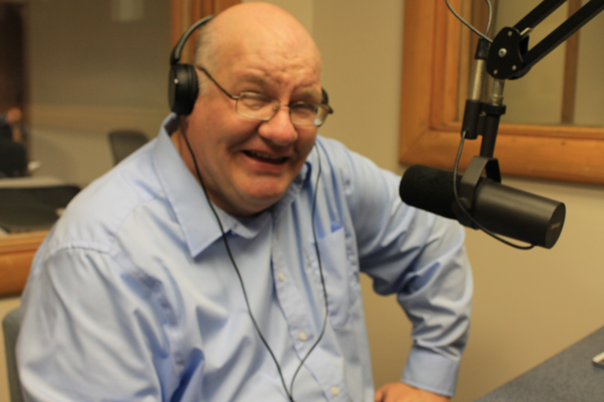

Dave Taylor

Greg Goode
Click a link to listen to Individual Interviews by Greg:
Gov. Mike Pence: February 4, 2015
Rep. Alan Morrison: February 11, 2015
Sen. Rodric Bray and former Sen. Richard Bray: February 24, 2015
Craig McKee: March 4, 2015
Bob Heaton: March 25, 2015
Sen. Jon Ford: April 1, 2015
Brian Burton: April 15th, 2015
Chris Nations: May 13, 2015
Steve Witt: June 3, 2015
Matt Huckleby: August 17, 2015
Max Jones
Phil Glende

Phil Glende is the executive director of Student Media at Indiana State University in Terre Haute. In his current job, he works with students who create and distribute news and information for print, broadcast and online. Previously, he worked as a reporter and city editor for nearly 30 years at newspapers in North Dakota, Illinois, Florida, Pennsylvania, Ohio and Wisconsin, and he taught journalism at a college in suburban Chicago. He received in doctorate in mass communication from the University of Wisconsin-Madison, with a focus on the history of newspapers. His interests include public affairs, the arts, journalism and history. He fell in love with noncommercial radio as an undergraduate at the University of Minnesota, Duluth, where he was, among other things, the host of a weekly jazz show.
Click a link to listen to Individual Interviews by Phil:
Roby George and Chris Olsen: February 18, 2015
Cinda May: March 4, 2015
Jim Speer and Jeffery Stone: March 11, 2015
John Conant: April 1, 2015
Carolee Buis: April 8, 2015
Donna Beegle: April 22, 2015
Tom Szymanski & Lisa Phillips: April 22, 2015
Tom Szymanski: April 22, 2015
Jason Krueger: May 20, 2015
Joni Wise: June 10, 2015
Teresa Exline
Teresa Exline serves as chief of staff for the Office of the President at Indiana State University. Since joining ISU in 1987, she has served in a variety of communications and marketing roles before moving to the President’s Office in 2006. Exline is a past trustee of the Council for Advancement and Support of Education’s governing board and a past chair of the CASE V Great Lakes District. She also has served on the American Association of State Colleges and University’s Advisory Council on Communications and Public Affairs. A journalism graduate of Indiana University, she previously served as editor and news reporter of the Sullivan Daily Times, and as an editor of trade publications and copywriter for Shepard-Poorman Communications in Indianapolis. Her interests include history, public affairs, philanthropy and community engagement, the latter two which led to her co-founding the 100+ Women Who Care of Vigo County.